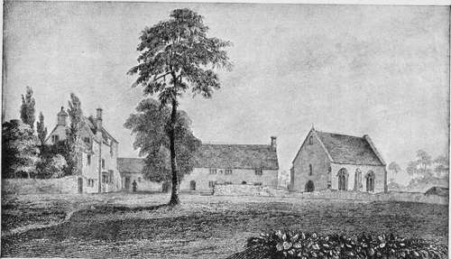

Medieval Hospitals. Part 2
Description
This section is from the book "Medieval Medicine", by James J. Walsh. Also available from Amazon: Medieval Medicine..
Medieval Hospitals. Part 2
Then, as now, Bishops made regular visits at intervals ad limina—that is, to the Pope as Chief Bishop of the Church; and according to tradition Pope Innocent called their attention particularly to this hospital of Santo Spirito, one of his favourite institutions, and suggested that every diocese in Christendom ought to have such a refuge for the ailing poor. The consequence was the erection of hospitals everywhere throughout Europe. Virchow has told the story of these hospital foundations of the Holy Ghost, as they were called, and makes it very clear that probably every town of 5,000 inhabitants everywhere throughout Europe at this time had a hospital. The traditions with regard to France are quite as complete as those that concern Germany and the great hospitals of London—St. Thomas's; St. Bartholomew's, which had been a priory with a house for the care of the poor, but was now turned into a hospital; Bethlehem, afterwards Bedlam; Bridewell, and Christ's Hospital, the first of which afterwards became a prison, while Christ's Hospital, though retaining its name, became a school. The Five Royal Hospitals, as they were called, were either founded, or received a great stimulus and thorough reorganization, during the thirteenth century.
* See Walsh, "The Thirteenth, Greatest of Centuries," New York, seventh edition, 1914.
It would be easy to suppose these hospitals were rather rude structures, inexpertly built, poorly arranged, and above all badly lighted and ventilated. They might be expected to furnish protection from the elements for the poor, but scarcely more, and probably became in the course of time hotbeds of infection because of their lack of air and unclean-ness. As a matter of fact, they were almost exactly the opposite of any such supposition. Those in the larger towns at least were model hospitals in many ways, and ever so much better than many hospital structures erected in post-medieval centuries. Indeed, the ordinary impression as to the medieval hospitals, and their lack of suitability to their purpose, would apply perfectly to the hospitals of the latter half of the eighteenth and the early nineteenth centuries. It is because our generation still has the memory of these hospitals of the past generation, and assumes that if these were so bad, the hospitals of an earlier time must have been worse and the hospitals of the medieval period must have been intolerable, that the derogatory tradition with regard to medieval hospitals and many other medical subjects maintained itself until the coming of real information with regard to them.
The ecclesiastical architecture of the later Middle Ages was not only beautiful, but it was eminently suitable for its purpose, and above all provided light and air. The churches, the town halls, the monasteries and abbeys, were models in their kind, and it would have been quite surprising if the hospitals alone had been unworthy products of that great architectural period. As abundant remains serve to show even to the present time, they were not. The hospitals built in the thirteenth century particularly usually were of one story, had high ceilings with large windows, often were built near the water in order that there might be abundance of water for cleansing purposes, and also so that the sewage of the hospital might be carried off, had tiled floors that facilitated thorough cleansing, and many other provisions that the architects of our time are reintroducing into hospital construction. They were a complete contrast to the barrack-like hospitals with small windows, narrow corridors, cell-like rooms, which were built even two generations ago, and which represented the lowest period in hospital building for seven centuries.
Viollet le Due, in his "Dictionary of Architecture," has given a picture of the interior of one of these medieval hospitals, that of Tonnerre in France, erected by Marguerite of Bourgogne, the sister of St. Louis, in 1293, which we reproduce here. Mr. Arthur Dillon, discussing this hospital from the standpoint of an architect, says :
Leper Hospital Of St. Bartholomew, Oxford.
From b* Medieval Hospitals^ by Miss R. M. Clay.
" It was an admirable hospital in every way, and it is doubtful if we to-day surpass it. It was isolated, the ward was separated from the other buildings, it had the advantages we so often lose of being but one story high, and more space was given to each patient than we can now afford.
" The ventilation by the great windows and ventilators in the ceiling was excellent; it was cheerfully lighted, and the arrangement of the gallery shielded the patients from dazzling light and from draughts from the windows, and afforded an easy means of supervision; while the division by the roofless, low partitions isolated the sick, and obviated the depression that comes from the sight of others in pain.
" It was, moreover, in great contrast to the cheerless white wards of to-day. The vaulted ceiling was very beautiful; the woodwork was richly carved, and the great windows over the altars were filled with coloured glass. Altogether, it was one of the best examples of the best period of Gothic architecture".
The hospital ward itself was 55 feet wide and 270 feet long and had a high arched ceiling of wood. The Princess herself lived in a separate building, connected with the hospital by a covered passage. The kitchen and storehouse for provisions were also in separate buildings. The whole hospital plant was placed between the branches of a small stream conducted around it, which served to temper the atmosphere, and was a source of water supply at one end of the grounds and helped in the disposal of sewage from the other end.
A hospital of the Holy Ghost which may be taken as the type of such structures is still standing at Liibeck in Germany, and was, like the hospital at Tonnerre, also built during the thirteenth century. It was erected as the result of the movement initiated by Pope Innocent's foundation of the Santo Spirito at Rome. The picture of this, in my " Thirteenth Century," will serve to show what Holy Ghost hospitals in important cities at least were like. Liibeck was one of the rich Hansa towns in the thirteenth century, but there were many others of equal importance, or very nearly so, and all of these towns were rivals in the architectural adornment of their municipalities, and particularly in the erection of cathedrals, town halls, guild halls, and other buildings for the use of citizens.
Continue to: